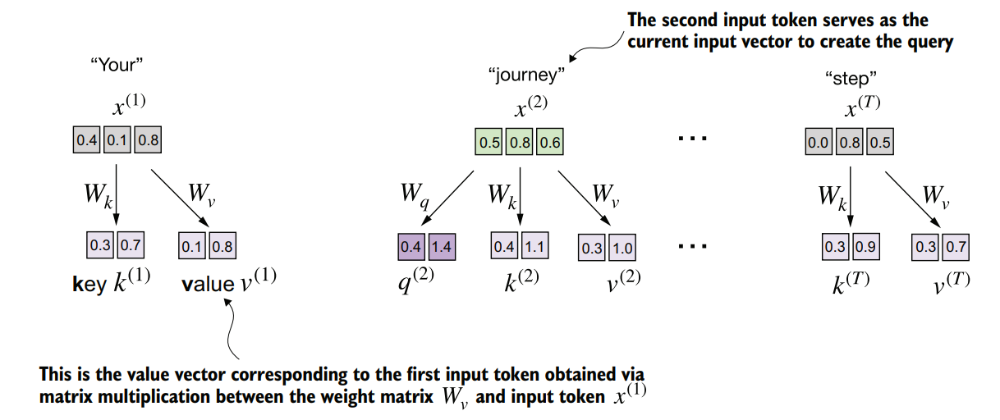
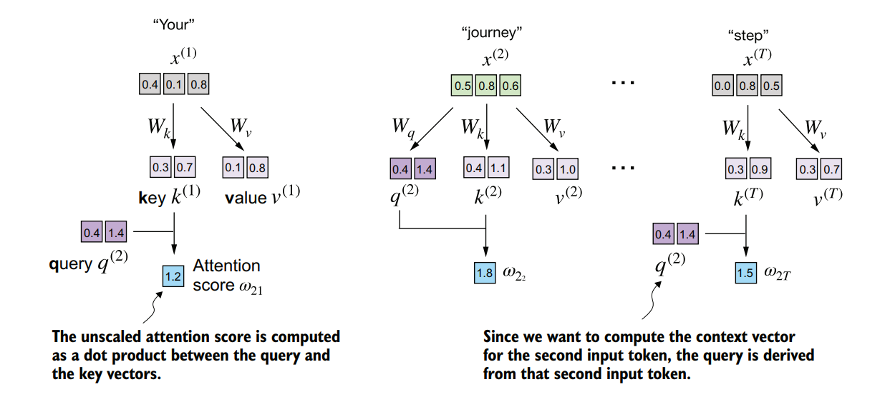
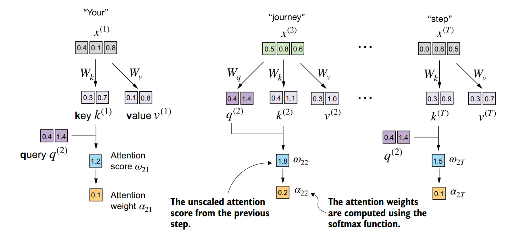
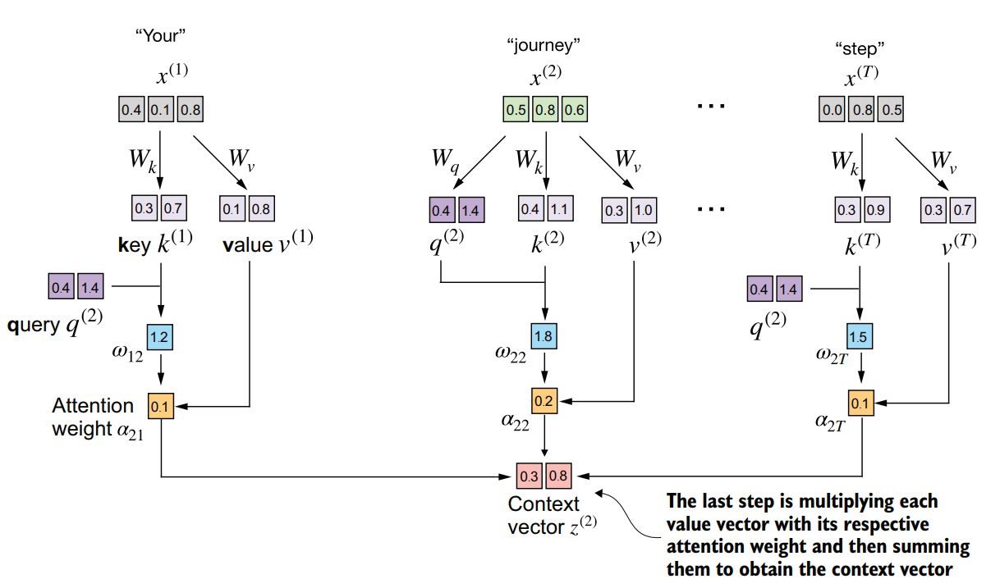
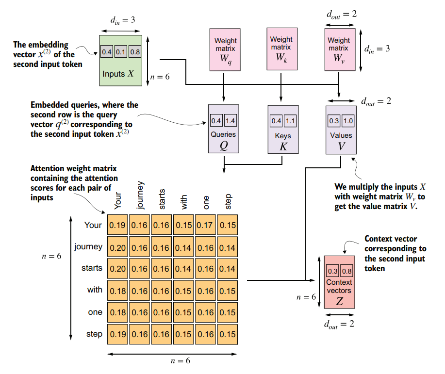

Our next step will be to implement the self-attention mechanism used in the original transformer architecture, the GPT models, and most other popular LLMs. This self-attention mechanism is also called scaled dot-product attention. As you will see, there are only slight differences compared to the basic self-attention mechanism we coded earlier. The most notable difference is the introduction of weight matrices that are updated during model training.
Key Takeaways
- Trainable weight matrices project input embeddings into query, key, and value vectors, enabling the model to learn context-specific relationships.
- Normalizing attention scores by the square root of the key dimension prevents vanishing gradients during backpropagation.
- Transitioning from manual parameter matrices to PyTorch nn.Linear layers improves training stability through optimized weight initialization.
Computing the attention weights step by step
We will implement the self-attention mechanism step by step by introducing the three trainable weight matrices $W_q$, $W_k$, and $W_v$. These three matrices are used to project the embedded input tokens, $x^{(i)}$, into query, key, and value vectors, respectively.

In the first step of the self-attention mechanism with trainable weight matrices, we compute query ($q$), key ($k$), and value ($v$) vectors for input elements $x$. Similar to previous sections, we designate the second input, $x^{(2)}$, as the query input. The query vector $q^{(2)}$ is obtained via matrix multiplication between the input $x^{(2)}$ and the weight matrix $W_q$. Similarly, we obtain the key and value vectors via matrix multiplication involving the weight matrices $W_k$ and $W_v$.
Let us begin by taking only the second element as input. We will define the input tensor directly to keep each code block self-contained and executable:
import torch
inputs = torch.tensor(
[[0.43, 0.15, 0.89], # Your (x^1)
[0.55, 0.87, 0.66], # journey (x^2)
[0.57, 0.85, 0.64], # starts (x^3)
[0.22, 0.58, 0.33], # with (x^4)
[0.77, 0.25, 0.10], # one (x^5)
[0.05, 0.80, 0.55]] # step (x^6)
)
x_2 = inputs[1]
d_in = inputs.shape[1]
d_out = 2
print("x_2:", x_2)
print("d_in:", d_in)
print("d_out:", d_out)# Output
x_2: tensor([0.5500, 0.8700, 0.6600])
d_in: 3
d_out: 2Note that in GPT-like models, the input and output dimensions are usually the same, but to better follow the computation, we will use different input ($d_{\text{in}}=3$) and output ($d_{\text{out}}=2$) dimensions here.
Next, we initialize the three weight matrices $W_q$, $W_k$, and $W_v$ shown in the figure:
torch.manual_seed(123)
W_query = torch.nn.Parameter(torch.rand(d_in, d_out), requires_grad=False)
W_key = torch.nn.Parameter(torch.rand(d_in, d_out), requires_grad=False)
W_value = torch.nn.Parameter(torch.rand(d_in, d_out), requires_grad=False)
print("W_query:\n", W_query)# Output
W_query:
Parameter containing:
tensor([[0.2961, 0.5166],
[0.2517, 0.6886],
[0.0740, 0.8665]])We set requires_grad=False to reduce clutter in the outputs, but if we were to use the weight matrices for model training, we would set requires_grad=True to update these matrices during model training.
Next, we compute the query, key, and value vectors for the second element:
query_2 = x_2 @ W_query
key_2 = x_2 @ W_key
value_2 = x_2 @ W_value
print("query_2:", query_2)
print("key_2:", key_2)
print("value_2:", value_2)# Output
query_2: tensor([0.4306, 1.4551])
key_2: tensor([0.4433, 1.1419])
value_2: tensor([0.3951, 1.0037])We can obtain all keys and values for the entire input sequence via matrix multiplication:
keys = inputs @ W_key
values = inputs @ W_value
print("keys.shape:", keys.shape)
print("values.shape:", values.shape)
print("keys:\n", keys)# Output
keys.shape: torch.Size([6, 2])
values.shape: torch.Size([6, 2])
keys:
tensor([[0.3669, 0.7646],
[0.4433, 1.1419],
[0.4361, 1.1156],
[0.2408, 0.6706],
[0.1827, 0.3292],
[0.3275, 0.9642]])The second step is to compute the attention scores, as shown in the figure:

The attention score computation is a dot-product computation similar to what we used in the simplified self-attention mechanism in the previous chapter. The new aspect here is that we are not directly computing the dot-product between the input elements but using the query and key obtained by transforming the inputs via the respective weight matrices.
Now, let us compute the attention scores with respect to the second element, $x^{(2)}$:
attn_scores_2 = query_2 @ keys.T
print("attn_scores_2:", attn_scores_2)# Output
attn_scores_2: tensor([1.2705, 1.8524, 1.8111, 1.0795, 0.5577, 1.5440])Now, we want to go from the attention scores to the attention weights. We compute the attention weights by scaling the attention scores and using the softmax function. However, now we scale the attention scores by dividing them by the square root of the embedding dimension of the keys:
d_k = keys.shape[-1]
attn_weights_2 = torch.softmax(attn_scores_2 / d_k**0.5, dim=-1)
print("attn_weights_2:", attn_weights_2)# Output
attn_weights_2: tensor([0.1500, 0.2264, 0.2199, 0.1311, 0.0906, 0.1820])
After computing the attention scores $\omega$, the next step is to normalize these scores using the softmax function to obtain the attention weights $\alpha$
The reason for the normalization by the embedding dimension size is to improve the training performance by avoiding small gradients. For instance, when scaling up the embedding dimension, which is typically greater than 1,000 for GPT-like LLMs, large dot products can result in very small gradients during backpropagation due to the softmax function applied to them. As dot products increase, the softmax function behaves more like a step function, resulting in gradients nearing zero. These small gradients can drastically slow down learning or cause training to stagnate. The scaling by the square root of the embedding dimension is the reason why this self-attention mechanism is also called scaled-dot product attention.
Now, the final step is to compute the context vectors. We compute the context vector as a weighted sum over the value vectors:

In the final step of the self-attention computation, we compute the context vector by combining all value vectors via the attention weights.
context_vec_2 = attn_weights_2 @ values
print("context_vec_2:", context_vec_2)# Output
context_vec_2: tensor([0.3061, 0.8210])Generalizing Self-Attention for Full Sequences
So far, we have only computed a single context vector, $z^{(2)}$. Next, we will generalize the code to compute all context vectors in the input sequence. We implement this by wrapping the mathematical operations inside a PyTorch Module class:
import torch.nn as nn
class SelfAttentionV1(nn.Module):
def __init__(self, d_in, d_out):
super().__init__()
self.W_query = nn.Parameter(torch.rand(d_in, d_out))
self.W_key = nn.Parameter(torch.rand(d_in, d_out))
self.W_value = nn.Parameter(torch.rand(d_in, d_out))
def forward(self, x):
keys = x @ self.W_key
queries = x @ self.W_query
values = x @ self.W_value
attn_scores = queries @ keys.T
attn_weights = torch.softmax(attn_scores / keys.shape[-1]**0.5, dim=-1)
context_vec = attn_weights @ values
return context_vecWe can use this class as follows:
torch.manual_seed(123)
sa_v1 = SelfAttentionV1(d_in, d_out)
print(sa_v1(inputs))# Output
tensor([[0.2996, 0.8053],
[0.3061, 0.8210],
[0.3058, 0.8203],
[0.2948, 0.7939],
[0.2927, 0.7891],
[0.2990, 0.8040]], grad_fn=<MmBackward0>)
The above figure summarizes the process of calculating context vectors using self-attention with trainable weight parameters $W_q$, $W_k$ and $W_v$
Optimizing with PyTorch Linear Layers
We can improve the SelfAttentionV1 implementation further by utilizing PyTorch’s nn.Linear layers, which effectively perform matrix multiplication when the bias units are disabled. Additionally, a significant advantage of using nn.Linear instead of manually implementing nn.Parameter(torch.rand(...)) is that nn.Linear has an optimized weight initialization scheme, contributing to more stable and effective model training.
import torch.nn as nn
class SelfAttentionV2(nn.Module):
def __init__(self, d_in, d_out, qkv_bias=False):
super().__init__()
self.W_query = nn.Linear(d_in, d_out, bias=qkv_bias)
self.W_key = nn.Linear(d_in, d_out, bias=qkv_bias)
self.W_value = nn.Linear(d_in, d_out, bias=qkv_bias)
def forward(self, x):
keys = self.W_key(x)
queries = self.W_query(x)
values = self.W_value(x)
attn_scores = queries @ keys.T
attn_weights = torch.softmax(attn_scores / keys.shape[-1]**0.5, dim=-1)
context_vec = attn_weights @ values
return context_vec
torch.manual_seed(789)
sa_v2 = SelfAttentionV2(d_in, d_out)
print(sa_v2(inputs))# Output
tensor([[-0.0739, 0.0713],
[-0.0748, 0.0703],
[-0.0749, 0.0702],
[-0.0760, 0.0685],
[-0.0763, 0.0679],
[-0.0754, 0.0693]], grad_fn=<MmBackward0>)Conclusion
Next, we will make enhancements to the self-attention mechanism, focusing specifically on incorporating causal and multi-head elements. The causal aspect involves modifying the attention mechanism to prevent the model from accessing future information in the sequence, which is crucial for tasks like language modeling, where each word prediction should only depend on previous words. The multi-head component involves splitting the attention mechanism into multiple “heads.” Each head learns different aspects of the data, allowing the model to simultaneously attend to information from different representation subspaces at different positions. This improves the model’s performance in complex tasks.